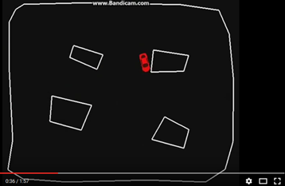
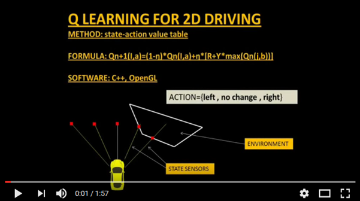
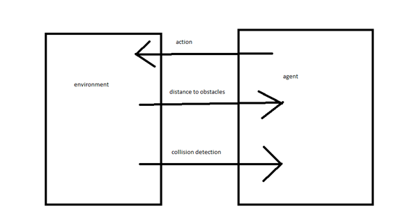
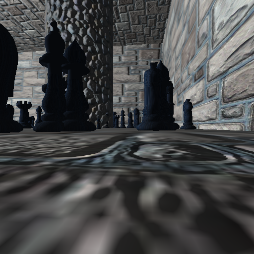
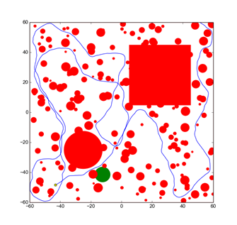
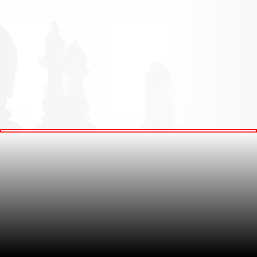
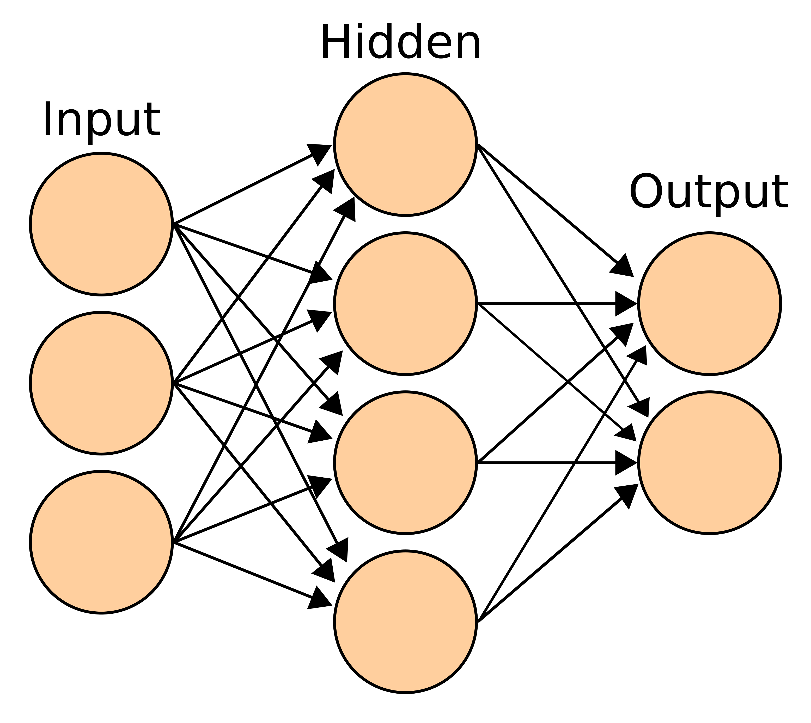
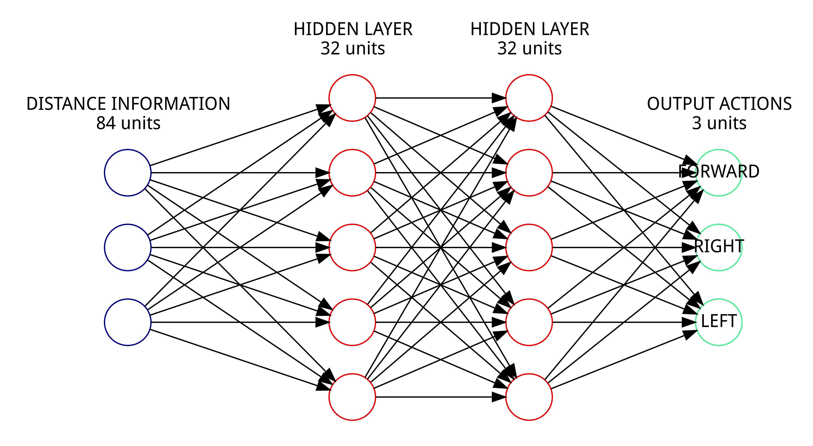

My little document
Table of Contents
1 root
1.1 TODO Reinforcement Learning
1.1.1 Action Value Function
1.1.2 ε-greedy
1.1.3 Q Learning
\[ Q(s_{t},a_{t})\ \leftarrow\ \underbrace {Q(s_{t},a_{t})} _{\rm {old~value}}\ +\underbrace {\alpha } _{\rm {learning~rate}}\ \cdot \left(\ \overbrace {\underbrace {r_{t+1}} _{\rm {reward}}+\underbrace {\gamma } _{\rm {discount~factor}}\cdot \underbrace {\max _{a}Q(s_{t+1},a)} _{\rm {estimate~of~optimal~future~value}}} ^{\rm {learned~value}}-\underbrace {Q(s_{t},a_{t})} _{\rm {old~value}}\right)\]
1.2 The video
https://www.youtube.com/watch?v=zOgSC---rgM

Figure 1: youtubescreenshot
The video illustrates a car learning to avoid obstacles. As shown in Figure 1, the environment is a 2D scenario. The whole scenario is surrounded by fences. There are 4 irregularly shaped obstacles. To show the learned ability generalizes well with different layouts of obstacles, the obstacles will circle around the center of the room slowly, at a constant speed, during running.
For each period, the car starts from the center of the room, with a randomly chosen direction. Its action is controlled by a reinforcement learning algorithm. During the early periods, the actions are like randomly decided. When the car runs into obstacles or fences, it will be repositioned to the center of the room, and a new period begins. The car learns over time.

Figure 2: youtubestructure
The illustration comprises two parts, a 2D environment described above, and a learning algorithm which controls the action of the car. The algorithm learns from and makes decisions on specified data provided by the environment. The environment emulates 5 state sensors, corresponding to 5 different direction in front of the car. These sensors find the nearest obstacle, and measure the distance from the obstacle to the car. The distance information is transferred to the car in the form of a 5D vector. During running, the algorithm will predict an action based on the distance information and then feed it back to the environment, to control the movement of the car.
1.3 Re-Implementation
For our further research, we need a verified code base to start with. So we want to implement the application in this video.

Figure 3: structure
The implementation takes 3 steps.
- Build an environment.
- Implement a reinforcement learning algorithm to control the car.
- Provide and transfer learning data and actions between the environment and the algorithm.
1.3.1 Reinforcement Learning
We started this part with a project on Github.com. In further research, we will build a variant algorithm of the deep q network. So we choose this implementation of deep q network as the code base of our reinforcement learning algorithm. This implementation is written in Python, and based on Theano and Lasagne.
1.3.1.1 Adaptation
The deep q network takes the raw images of a game as its inputs to predict actions. The network includes convolutional layers to handle the image data. But the current environment provides only distance information, in the form of a vector, instead of the raw images. So we replaced the convolutional neural network with a simple multi-layer neural network, to handle the distance information.
1.3.2 The Environment
We choose to build this 2D environment on a real-time 3D rendering engine. It is for the convenience of later transition. Because our later goal is to train the car to avoid obstacles in 3D environments.
1.3.2.1 Panda3D
The 3D rendering task will be accomplished by Panda3D, a game development environment. It is written in C++ and supports developments in both C++ and Python.
1.3.2.1.1 Intra Process Communication
In future research, it is required to frequently transfer raw images from the environment to the learning model. To make this process more efficient, we want to be able to transfer image data in the form of intra-process pointers. Choosing Python as the programming language for both the virtual environment and the learning model will allows us to conveniently implement this mechanism.
1.3.2.2 Layout

Figure 4: A 3D first person view of the car

Figure 5: A top-down view of a layout. Red shapes represents for obstacles. (mark the poles later)(Green circle/blue lines remove later) Green destination(remove)Blue line routes (remove)
As shown in Figure 4, the scenario is located in a cubic room. The size of the room is 120x120. A round pole is fixed at the left bottom corner (Figure 5). Its radius is 12.5. And a square pole is fixed at the top right corner. Its area size is 40x40. 200 chess pieces are randomly positioned in the room. Their radius distribute randomly between 0.5 and 5.
1.3.2.3 Agent Speed
The fps of the 3D environment is 60. The agent is allowed to choose an action for every 4 frames. The speed of the agent is 6. So, for each action step, the distance the agent can travel is 0.4.
1.3.2.4 Models
The 3D models used to build the 3D environment come from Panda3D's example games.
- The models of the room are provided by the example bump-mapping.
- The models of the chess pieces are provided by the example chessboard.
1.3.3 Learning Data
Required learning data includes distance information and collision signals.
1.3.3.1 Depth Maps
Within a 3D render engine, a convenient way to generate distance information is to extract a depth map from the 3D models.
Figure 6: A depth map. Light colors represents for rear objects. Dark colors represents for near objects.
A depth map is a type of distance information. Like a raw image, it can be represented by a real-valued matrix. Corresponding to a raw image (Figure 4), each point on a depth map (Figure 6) represents the distance from that point to the viewpoint.
In real world, there are many algorithms able to generate depth maps from raw images. Within a 3D rendering engine, a depth map can be generated by calculating the distance to a nearest 3D model for all directions. Depth maps are widely used in 3D rendering algorithms. For example, they are necessary intermediate data in shadow mapping algorithms. Rendering depth maps with 3D models is a basic function of a 3D engine, like Panda3D.

Figure 7: Crop the horizon (the red rectangle area) from the depth map
By cropping the horizon (Figure 7), the depth map can be converted into 1D distance information. In our experiments, the pixel size of the depth map is 90x90 and the size of the distance information vector is 90, in contrast to the only 5 state sensors existing in the original video.
1.3.3.2 Collision Detection
Collision detection is normally a part of a physics engine and there are several physics engines integrated within Panda3D.
1.3.3.2.1 Built-In Engine of Panda3D
There are two ways to go about collision detection. One is to manually create simple collision geometries, like spheres and polygons, for the obstacles. Panda3D offers built-in collision detection that calculates the impacts between these geometries. It is fast, but unable to precisely depict collisions of complex models. When the agent is only allowed to move around on the 2D plane of our virtual room, this method works fine. Because all the models can be precisely depicted by circles and lines in a top-down view.
1.3.3.2.2 Bullet
Another way is to create collision geometries for any models used for graphic rendering. Panda3D offers interface for the physics engine Bullet, and Bullet can generate these collision geometries. But it was found that Bullet cannot precisely detect collisions with these auto-generated geometries. Bullet might send signals of collisions when collisions actually didn't happen. We have applied the same machine learning algorithms on both engines in a scenario, which allows the agent to move on a 2D plane only. Comparing to the built-in engine of Panda3D, Bullet's collision detection lowered down the quality of the training samples seriously, and eventually prevented our attempts to train machine learning models with Bullet. And with the built-in engine, we have to restrict the agent's movement on the 2D plane to keep the complexity of collision detection at a low level, which can be handled as simple geometries.
1.3.4 Training Strategy

Figure 8: Multi-Layer Neural Network(wikipedia.org)

Figure 9: Multi-Layer Neural Network
1: input_layer = DataLayeaar() 2: # normalize input data 3: input_layer = Layer(input_layer, filter=lambda x: ( 4: x - T.mean(x)) / T.std(x)) 5: 6: layer1 = DenseLayer(input_layer=input_layer, n_in=84, 7: n_out=32, std=.005, bias=0) 8: layer1 = ReLU(layer1) 9: 10: layer2 = DenseLayer(input_layer=layer1, n_in=32, n_out=32, std=.005, bias=0) 11: layer2 = ReLU(layer2) 12: 13: output_layer = DenseLayer(input_layer=layer2, n_in=32, 14: n_out=n_actions, std=.005, bias=0)
1.3.4.1 Rewarding Rules
For non-collision frames, the rewards are 0.0. For collision frames, the rewards are -1.0. This rule set is designed only to inform the agent to avoid obstacles. These rules will restrict the expected convergent results of the action value function between -1.0 and 0.0.
1.3.4.2 Allowed Actions
Allowed Actions include turning left, turning right and going forward, same as the design of the video. Staying or going backward are not allowed. Because these actions will provide an option for the agent to stay in safe area, without showing its ability of avoiding obstacles.
1.3.4.3 Random Actions
According to the ε-greedy exploration method. Actions are randomly decided at the beginning. Random actions are later gradually replaced with the best results predicted by the action value function.
1.3.4.4 History Pool
This is a design preserved from the deep Q-network algorithm. The learning data generated by the environment will be collected into a history pool. The pool has a fixed size. When its maximum size is reached, old data will be removed. The training phase will randomly pick data from the pool.
1.3.5 Results and discussion
Most of the time, the agent is able to survive and avoid obstacles for over 10,000 steps.
1.3.5.1 Problems
We lacks efficient results verification methods. The only indicator is the length of the agent's survival time. It varies largely with different layouts of obstacles, and takes a long time to verify. Because the fps of the environment is fixed at 60. A single run of simulation over 10,000 steps will consume more than 10 minutes.